| 本节通过采集简单的页面作为采集教程实例。 每个系统模型都有自己的采集，无论是内置的还是用户自定义的系统模型，新闻系统有新闻系统采集，下载系统有下载系统采集等等。 下面讲解新闻系统模型的采集，其它系统模型采集基本雷同，用户可举一反三。 |
|
| 采集页面地址 |
|
本例要采集的页面地址：http://www.phome.net/tmp/cjpage/list.html |
| 开始采集 |
| 采集一般步骤： |
| 1、增加采集节点； |
| 2、预览采集正则是否正确； |
| 3、开始采集； |
| 4、对采集的数据进行审核并入库； |
| 5、生成栏目及内容HTML页面。 |
| 一、增加采集节点： |
| 1、登录后台->“栏目”>“采集管理”>“增加采集节点”； |
| 2、“选择要增加采集的栏目”（选择终极栏目）； |
| 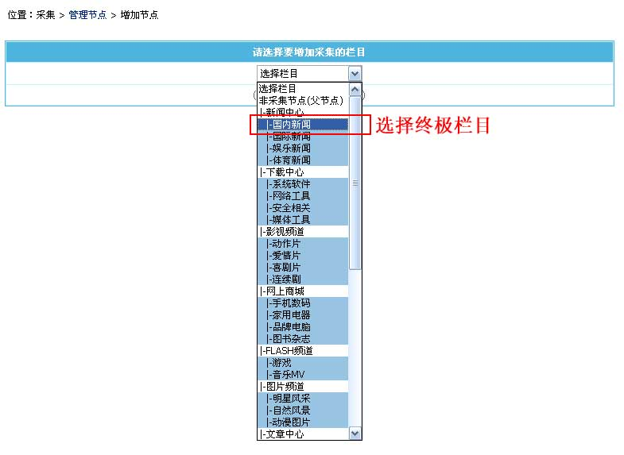 |
| 3、“选择要增加采集的栏目”后进入增加采集节点页面； |
| 4、打开要采集的列表页面：http://www.phome.net/tmp/cjpage/list.html |
| 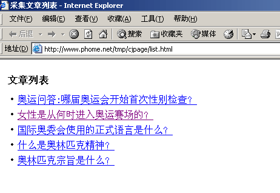 点击查看“源文件” 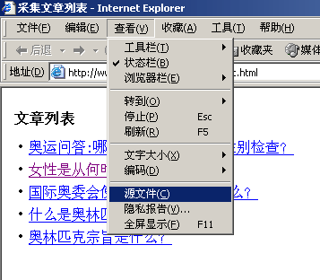 点击查看，列表页源代码为如下： 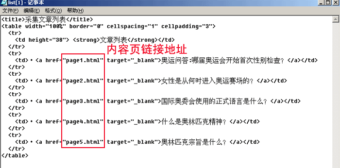 |
| 5、开始设置采集节点及列表页正则： |
| (1)、输入节点名称：采集实例 |
| 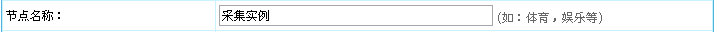 |
| (2)、采集页面地址：http://www.phome.net/tmp/cjpage/list.html |
| 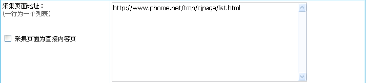 |
| (3)、由列表页的源代码：“<a href="page1.html" target="_blank">”，我们得出“内容页地址前缀”为：http://www.phome.net/tmp/cjpage/ |
| 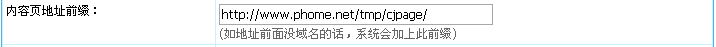 |
| (4)、设置“信息页链接正则”：由列表页的源代码得出。 |
| 图1：页面源代码 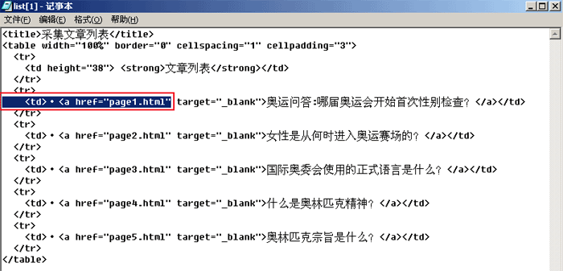 图2：得出的信息页链接正则 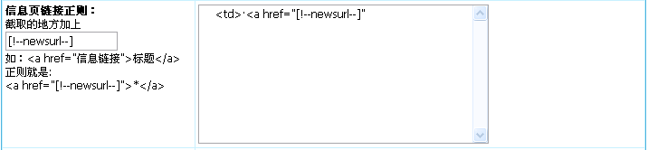 |
| 6、点击采集的内容页页面并查看源文件：http://www.phome.net/tmp/cjpage/page4.html |
| 图1：内容页页面 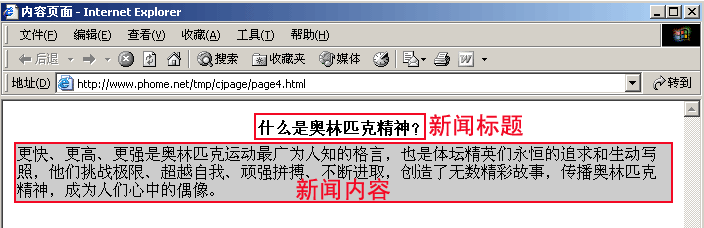 图2：内容页源代码 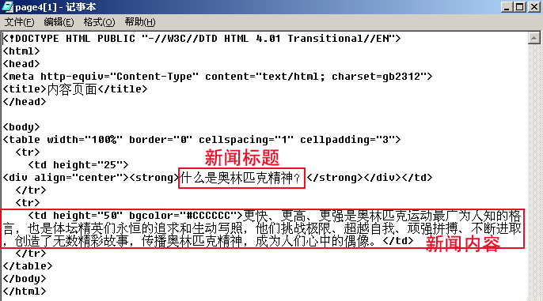 |
| 7、设置内容页内容正则：(标题及内容正则) |
| (1)、标题正则：由源代码内容我们得出“新闻标题”正则为： |
| 图1：页面源代码 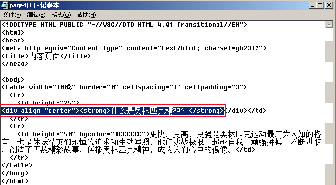 图2：得出的标题正则 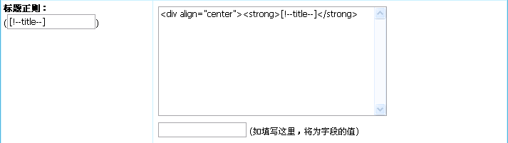 |
| (2)、内容正则：由源代码内容我们得出“新闻内容”正则为： |
| 图1：页面源代码 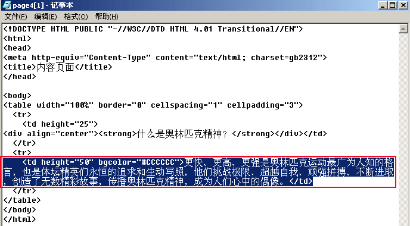 图2：得出的新闻内容正则 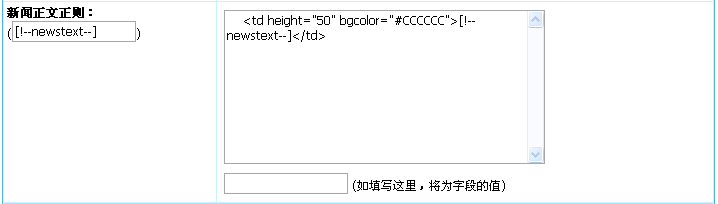 |
| 8、点击“提交”按钮即可增加节点完毕，整个表单最终效果如下： |
| [点击查看] |
| 二、预览采集正则是否正确： |
| 1、上面增加采集节点后，我们返回“管理节点”页面，如下： |
| 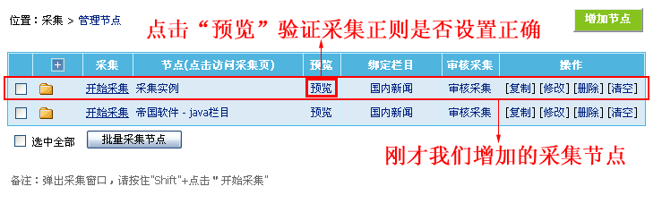 |
| 2、点击“预览”采集，进入节点正则预览与验证： |
| 图1：采集页面地址列表 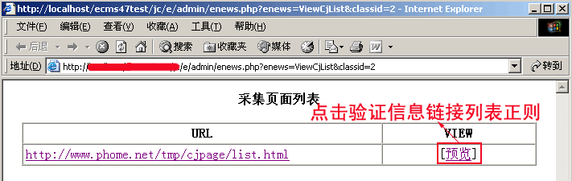 图2：信息链接列表 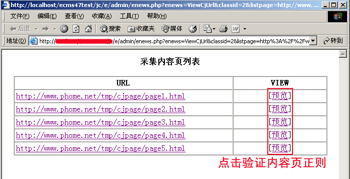 图3：采集的内容页内容 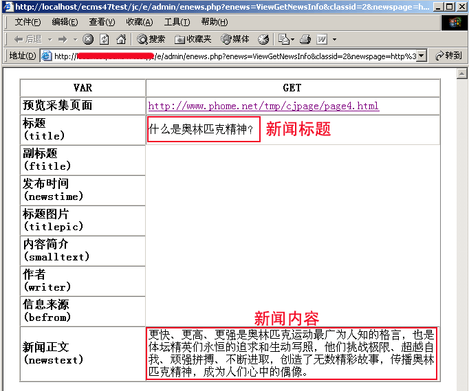 |
| 3、上面链接列表页及内容页内容预览无误后方可进行采集操作。 |
| 三、开始采集： |
| 1、上面的采集节点正则预览无误后，我们返回“管理节点”页面： |
| 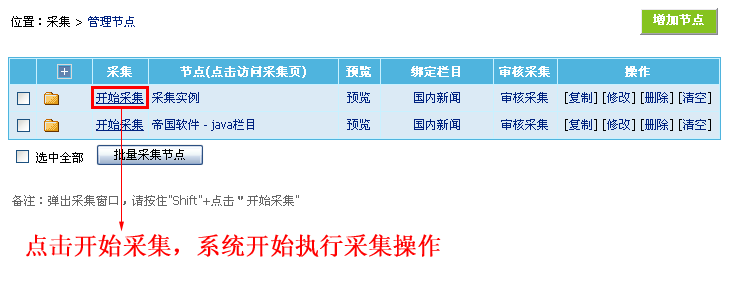 |
| 2、点击上面的“开始采集”链接，开始进行采集； |
| 3、采集信息完成后，系统会转向采集入库页面，如下： |
| 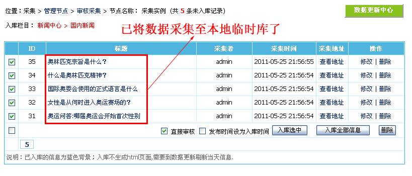 |
| 四、对采集的数据进行审核并入库： |
| 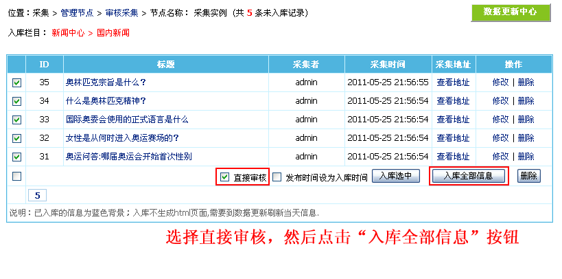 即可完成入库操作： 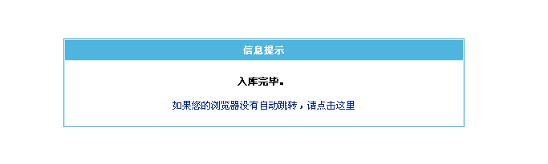 管理栏目信息也可以看到我们刚才入库的信息： 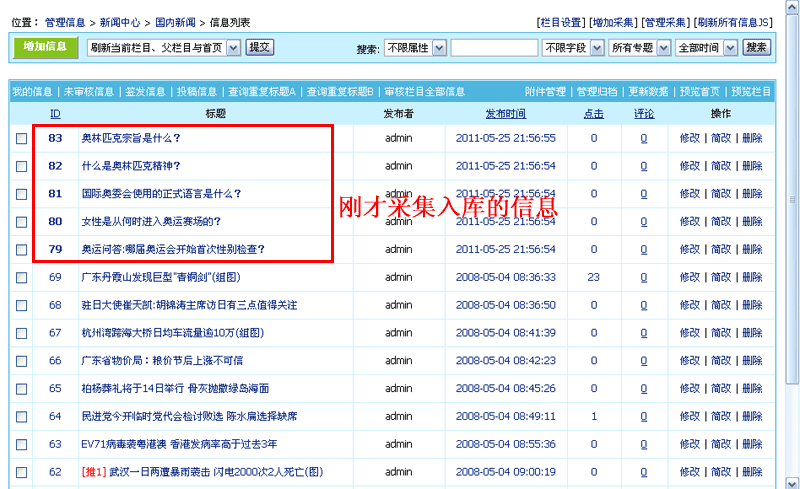 |
| 五、生成栏目及内容HTML页面： |
| 点击“系统”>“数据更新”>“数据更新中心”，进入数据更新中心页面： |
| 1、生成首页：点击“刷新首页”。 |
| 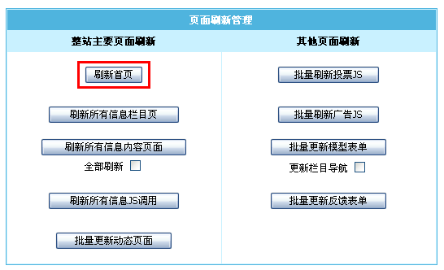 |
| 2、生成栏目页：“刷新多栏目页面”选择“国内新闻”这个栏目，然后点击“开始刷新”。 |
| 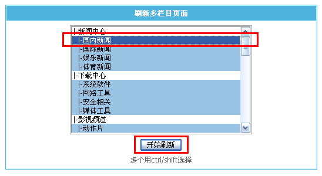 |
| 3、生成内容页：“按条件生成信息内容页面”： |
| 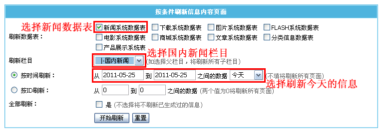 |
| 六、预览前台页面 |
| 首页： 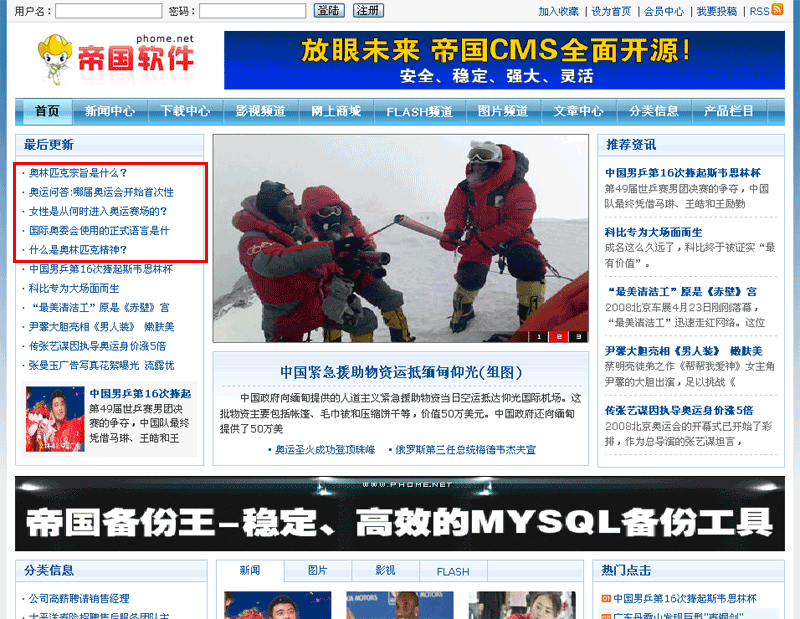 |
| 列表页： 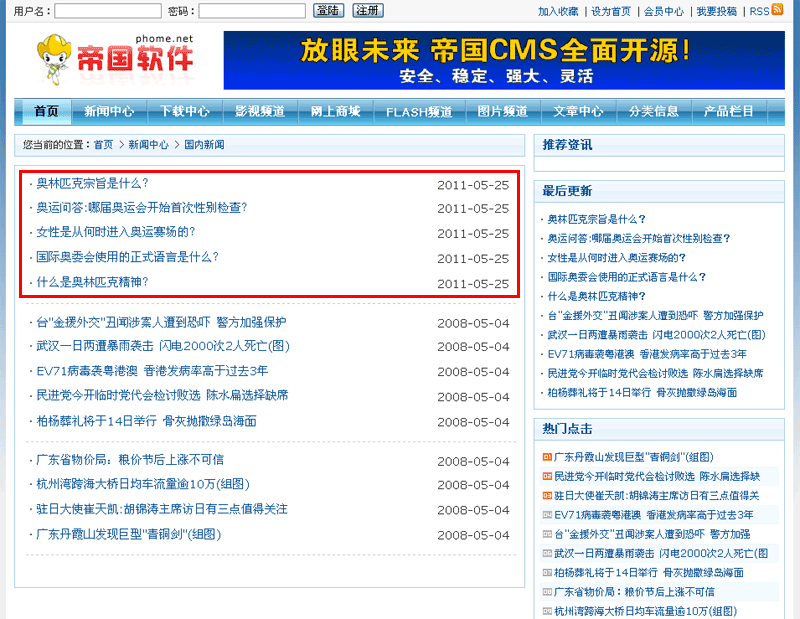 |
| 信息内容页： 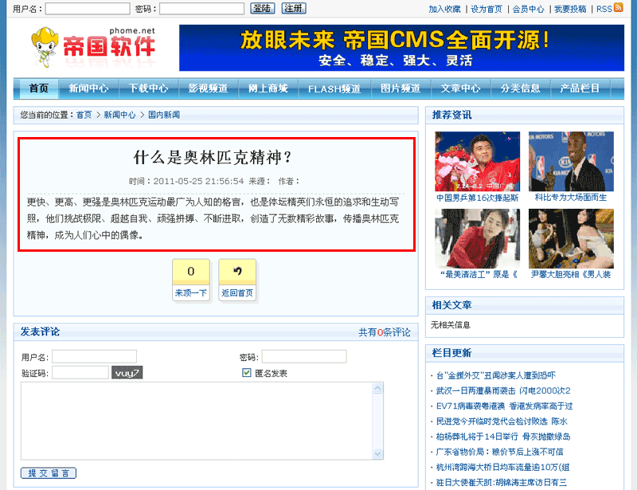 |
| 至此本实例讲解完毕。 |
| 常见问题 |
| 1、提示信息：Warning: preg_replace() [function.preg-replace]:
Compilation failed: range out of order in character class at offset 83 in
答：你的采集正则变量名写错导致，请检查你的正则变量。 |